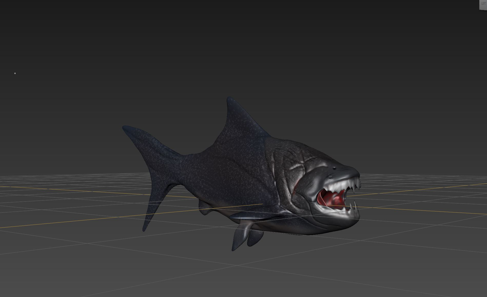
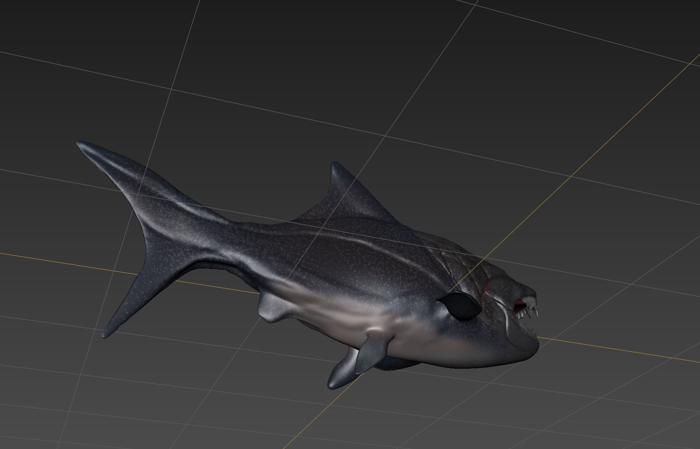
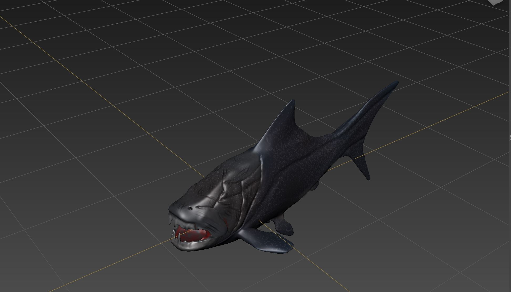

The Project:
Sculpt and paint a prehistoric or extinct animal.
What I learned:
Learned about how anatomy of something changes a lot how you sculpt and more about how to use tools to scupt specific parts of the animal.
  